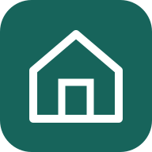

تعذّر الاتصال بيوني هوم
تحقق من اتصال الإنترنت ثم حاول مجددًا. إذا استمرت المشكلة، فقد يكون الموقع غير متاح مؤقتًا.
إعادة المحاولة
تحقق من اتصال الإنترنت ثم حاول مجددًا. إذا استمرت المشكلة، فقد يكون الموقع غير متاح مؤقتًا.
إعادة المحاولة